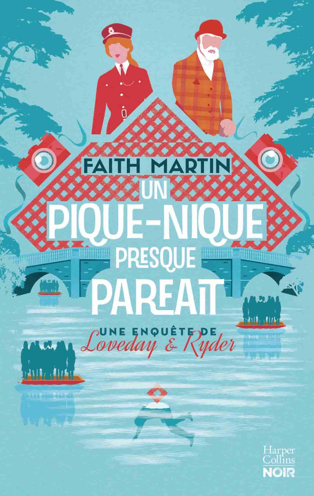
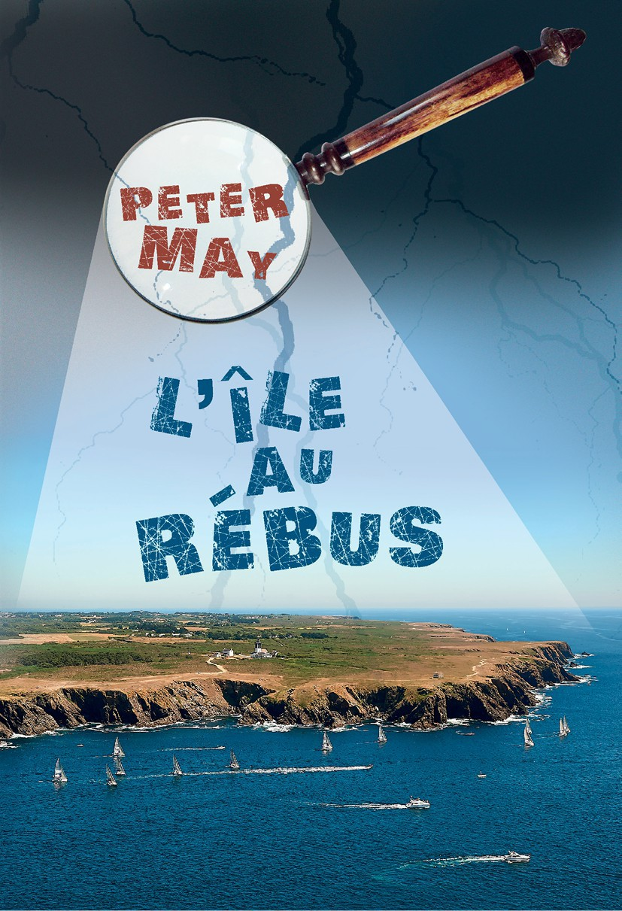

Heimaey
#roman-policier
Askja
#roman-policier
Du fond des âges
#roman-policier
Sauvage par nature
#récit-de-voyage
Les Heures indociles
#thriller

Le Corbeau d’Oxford
#roman-policier

Un pique-nique presque parfait
#roman-policier
Le Règne des Targaryen
#fantasy
Le Trône de Fer - L'Intégrale 1
#fantasy
Le Trône de Fer - L'Intégrale 2
#fantasy
Le Trône de Fer - L'Intégrale 3
#fantasy
Le Trône de Fer - L'Intégrale 4
#fantasy
Le Trône de Fer - L'Intégrale 5
#fantasy
Dans la maison du ver
#fantasy
Branché - Le Printemps de l'An 0
#science-fiction
Le Mort aux quatre tombeaux
#roman-policier
Terreur dans les vignes
#roman-policier
La Trace du sang
#roman-policier

L'Ile au rébus
#roman-policier
L'Ile des chasseurs d'oiseaux
#roman-policier